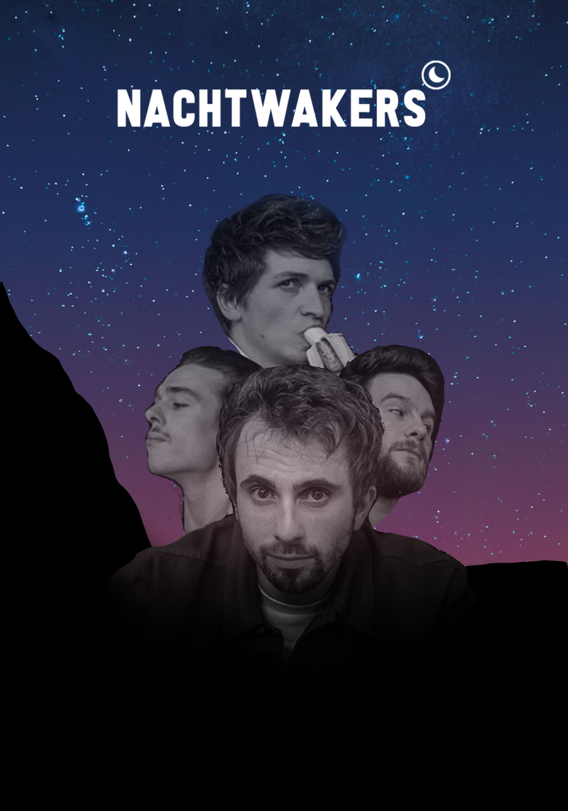

Hey jij daar! Beste lezer, mijn naam is Baha(a)r Zoubin. Geboren en getogen in Zwolle, verhuist naar Tilburg. In
mijn vrije tijd speel ik graag piano, drink ik Nespresso en houdt ik mij bezig met de psychologie van de mens.
Ook raak ik erg geïnspireerd door mooie dingen en bewonder ik ze graag. Momenteel zit ik in het tweede semester
van de opleiding ICT & Media Design. In dit semester moeten wij een band branden en werken aan een eigen
project. Ik houd mij voornamelijk bezig met logo's, posters, designs en animaties. Dit is graag wat ik doe in
het gebied van ICT & Media Design. Neem een kijkje op mijn online portfolio om mijn werk te zien.
SELFIEWEEK
Tijdens dit semester van ICT & Mediadesign mochten wij onszelf ontwikkelen in het gebied van ICT &
Mediadesign, in een zogenoemde Selfieweek. Ik heb ervoor gekozen om tijdens mijn project aan design en
branding te gaan werken. Zo ben ik op het project "Babulja" gekomen. Ik vond dit project wel een van de
highlights van dit semester, puur omdat het een speciale betekenis voor mij heeft en ik kon zelf kiezen wat
ik wou doen en hoe ik het wou doen. Hieronder kunnen jullie alvast een filmpje zien die ik gedurende
Selfieweek heb gemaakt. Mochten jullie meer willen zien? Klik dan hier
SPRINT 0
In sprint 0 van dit semester zijn we bezig geweest met de artistic exploration en hebben we kennis gemaakt met de
band. We moesten inspiratie zoeken over de band. Ook moesten we doelgroepanalyses afnemen. Zelf heb ik ook nog
een poster gemaakt voor dat ik wist wie de band was, en nadat ik kennis heb gemaakt met de band. Aan het einde
van de sprint heb ik samen met een klasgenoot de presentatie gedaan. Wil je meer zien? Klik dan hier

SPRINT 1
Tijdens sprint 1 heb ik mij voornamelijk bezig gehouden met het ontwerpen van een nieuw logo voor de Nachtwakers.
Ook heb ik gewerkt aan de brandguide en hebben wij allemaal een website design gemaakt voor de Nachtwakers.
Natuurlijk hebben wij het vak UEX ook toegepast en hebben wij gekeken naar wat de gebruiker van de website vind.
Wil je meer te weten komen over mijn werk? Klik dan
In sprint 2 hebben we gewerkt aan de AR posters. Ook hebben we 3D models uitgewerkt en storyboards gemaakt voor
de AR poster. We hebben testen uitgevoerd om te kijken welke poster het meest aantrekt. Ik vond deze sprint erg
leuk, omdat de focus lag op designen. Wil je mijn werk zien? klik dan
Tijdens sprint 3 hebben we ons bezig gehouden met de customer journey en de AR poster. Ik heb 1 customer journey
uitgewerkt en de volledige AR poster plus animatie gemaakt. Wil je het resultaat zien? klik dan